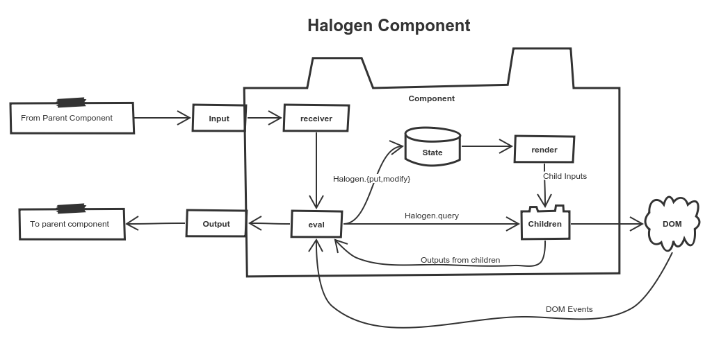

Me
A guy who desperately needs to change his LinkedIn photo!

WAT?!?


I also coorganise the Brisbane FP User Group
I am a stickler for abstractions
Especially abstractions that give a program "just enough power"
Whilst not making programs harder to reason about by giving them
"too much" power
Read: I am an insufferable functional programming pedant
I love things that allow me to reason about my program better:
- Algebraic Data Types
- Tracked (Extensible) Effects
- Classy Lenses
- Free Monad Based DSLs
- FRP
- etc. :)
Because most of my time is spent maintaining code than writing new stuff
And the easier code is to reason about, the safer it is to refactor and compose
And we are going to want to compose and refactor a lot as our code grows
So I have no reservations about optimising for that case
This is especially important with UIs, as they bear the churn of human inconsistency and fickleness
So I feel like any efforts make FP more functional and maintainable are exciting and well worth the effort.
Web UIs
Historically, have not had the nice things that we want
But it is slowly getting better
( and this is awesome! )
Lets review some of the history of our JS UI journey so far.
It's an incredibly cool time to be in this space!
It feels like we've ironed out a lot of the old issues by making things more functional
And Elm has even captured the attention of JS devs enough to cross polinate ideas!
Browsers are quickly becoming the UI of choice (even for desktop)
We'll be DOM coding whether we like it or not, so we may as well jump in and help things get more functional
Lets talk more about Elm and Halogen.
Elm
Purely functional UI Language
- Compiles to javascript
- No mutation
- Tracked effects
- Leans on virtual DOM

program :
{ init : (model, Cmd msg)
, update : msg -> model -> (model, Cmd msg)
, subscriptions : model -> Sub msg
, view : model -> Html msg
} -> Program Never
init : (Model, Cmd Msg)
Provides the initial state value for program
And an optional side effect to further load the UI (e.g. An AJAX request)
The Cmd just feeds a Msg back into our program when it is done.
view : Model -> Html Msg
Takes the model and creates a virtual DOM tree
Elm patch the real DOM based on VDom diff
Any DOM Events that we are watching (clicks, etc) are will raise Msgs back to our program
update : Msg -> Model -> (Model, Cmd Msg)
Takes a Msg, the previous model and returns the new model.
Optionally raises a side effect that will raise another Msg back to us.
subscriptions : Sub Msg
Defines a list of outside things (Time, Websockets, etc) that our program wants to listen to.
These are packaged up in a Msg/Event which get fed into our update
This is beautifully simple!
But it can be a little too simple depending on what you need.
Modularity
You can't compose programs together
You can only manually compose the model types, msgs, updates and views
The Model and Msg types get really big, littered with information that is both public and private to child UI components
Cmds make our Msg type noisy
Example: A button which AJAX loads a file on click:
- LoadFileClicked
- LoadFileLoadedOk FileData
- LoadFileFailed ErrorMessage
Cmd is also not a Monad :(
All sequencing has to be done by coming back into update and raising another command
Very difficult to see the actual unit of work through the noise
Can end up writing your own state machine in update when you really just want a Cmd monad
Elm could very much work for you!
It seems to be working for a lot of people!
... but to me it feels like there is room for improvement.
Halogen
Purescript framework which:
- Compiles down to JS
- Is purely functional
- Has virtual DOM views
- Is based on events flowing into an eval function
(It looks a lot like elm on the surface!)
But it also has some other cool tricks!
A monadic eval that can sequence multiple backend calls into a single event process
Nestable components where you can't forget to wire something up
State of a component is hidden, so a parent can't break any abstractions of the children
But children can allow parents to query state
This is really useful for some operations where it would not be performant to raise an event on every update.
Like a text editor, where parent's may query for the content but it wouldn't scale to emit a content event on every keystroke
This extra power doesn't come for free!
Halogen is a bit more complicated
And maybe a little intimidating
type ComponentSpec h s f i o m =
{ initialState :: i -> s
, render :: s -> h Void (f Unit)
, eval :: f a -> ComponentDSL s f o m a
, receiver :: i -> Maybe (f Unit)
}
But I think that it's worth it! :)
But I can't possibly convince you of this in a talk: that's what the workshop is for!
Workshop
We'll implement the same application in both Elm and Halogen
This should help you see the differences and help you decide which one is for you
What you will need:
The code checked out: https://github.com/benkolera/ylj-reading-the-tea-leaves/
You'll want purescript, pulp, bower and elm installed
VSCode is handy
Come chat to me if you need help with this. I'll be in this room during lunchtime to help